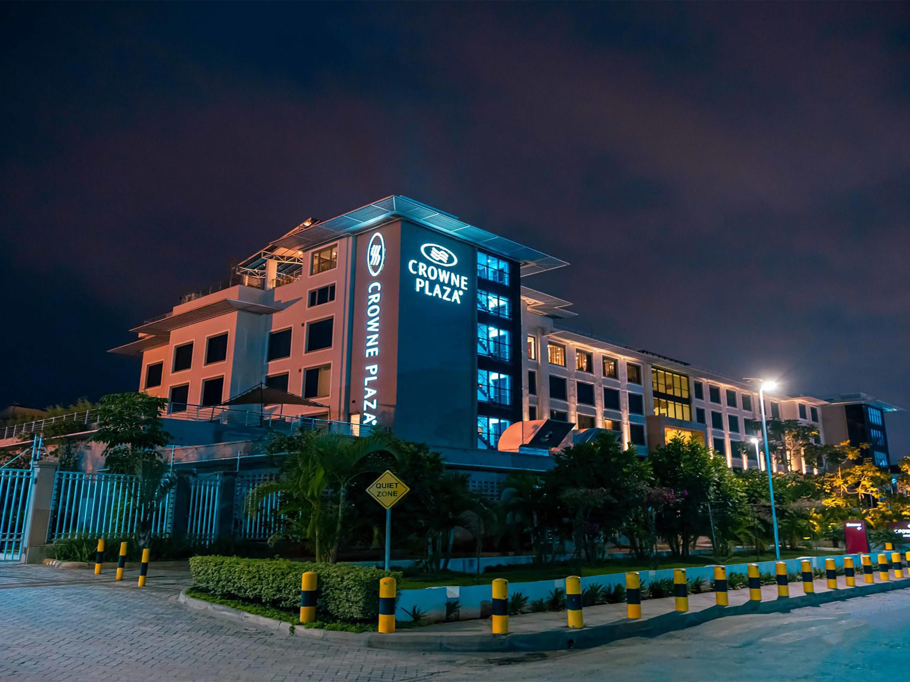
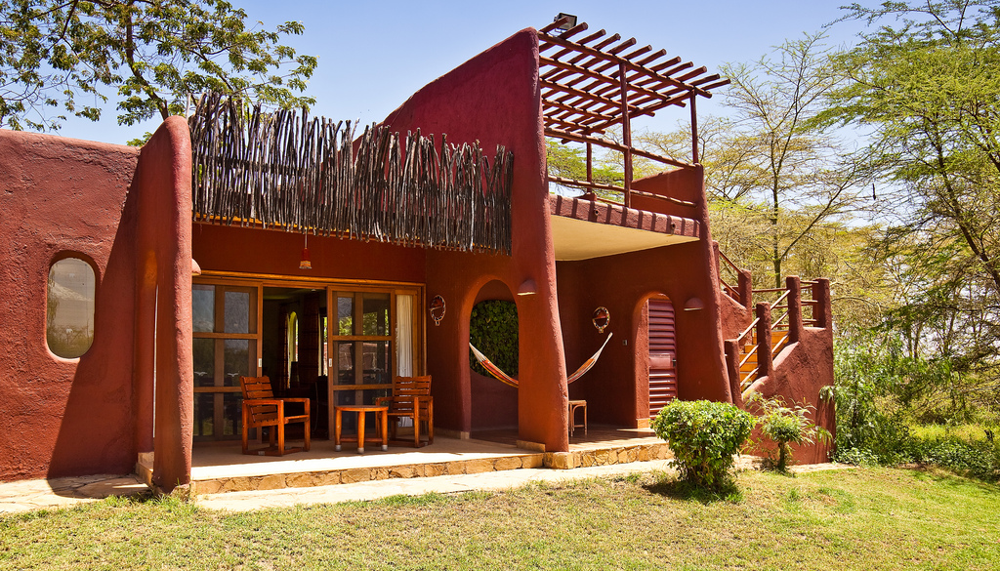
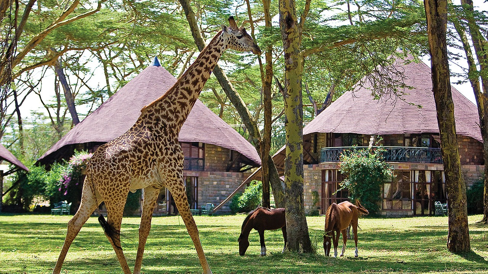
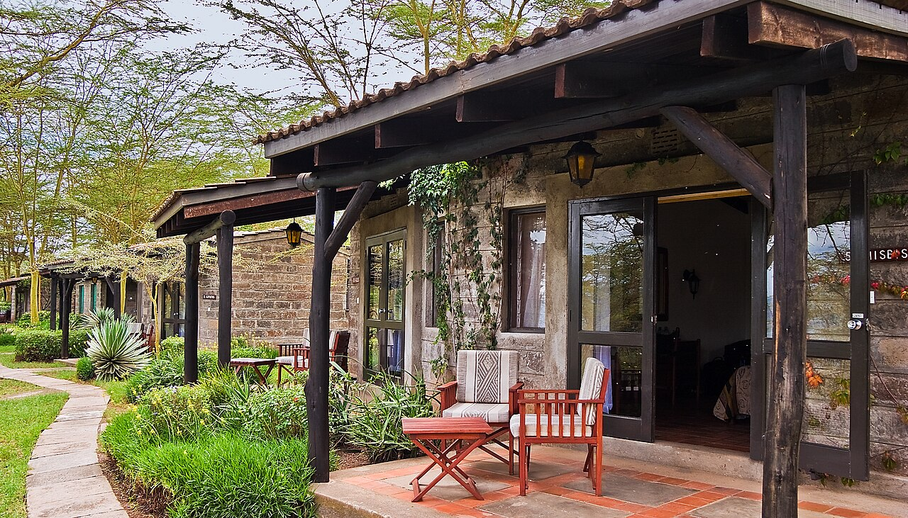
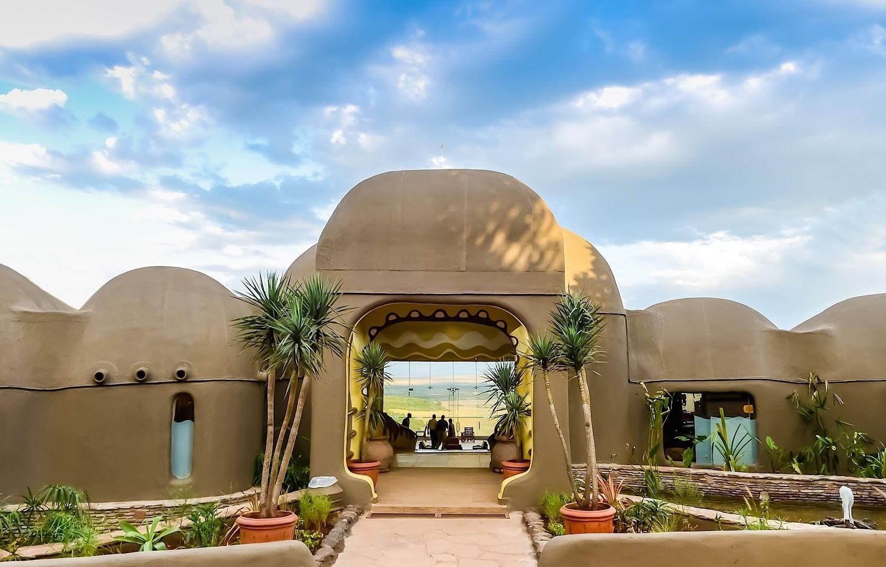
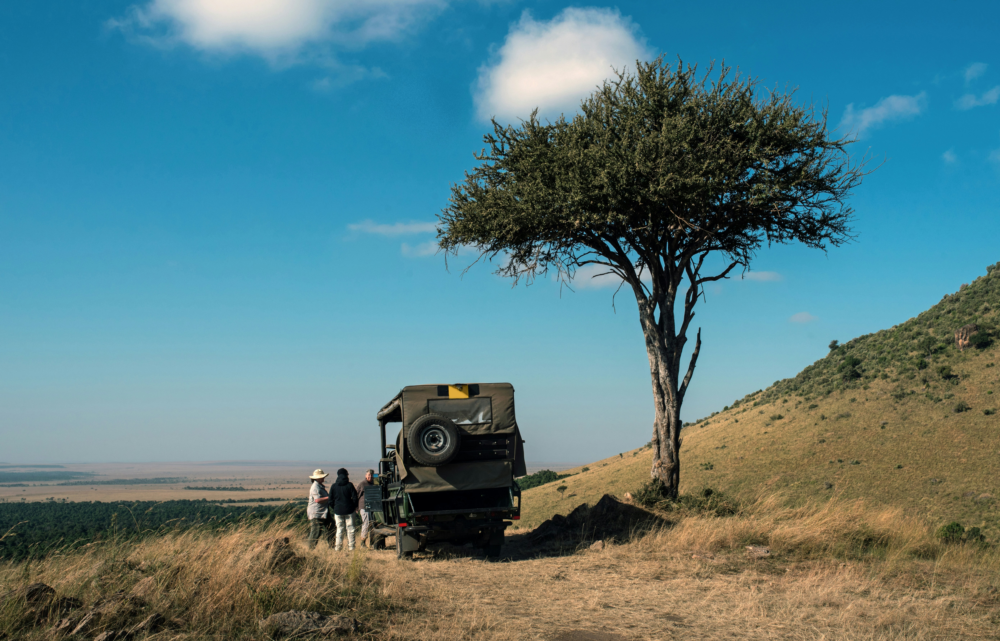

search
language
Immerse yourself in Kenya's ultimate wildlife adventure from Kilimanjaro to the Great Migration plains
Embark on the ultimate 9-day luxury safari journey through Kenya's most spectacular destinations, combining the majestic backdrop of Mount Kilimanjaro in Amboseli with the dramatic landscapes of Hell's Gate National Park, the flamingo-filled shores of Lake Nakuru, and extended exploration of the world-renowned Maasai Mara. This comprehensive itinerary offers an unparalleled experience of Kenya's diverse ecosystems and iconic landmarks with extra time for immersive wildlife viewing.
Begin your adventure with a comfortable overnight in Nairobi before journeying to Amboseli National Park, famous for its large elephant herds and breathtaking views of Africa's highest peak. Continue to Lake Naivasha and Hell's Gate National Park for walking safaris, then explore Lake Nakuru's famous pink flamingo shores before spending three full days in the legendary Maasai Mara, home to the Great Migration and abundant Big Five sightings.
Our expert guides will provide deep insights into each unique ecosystem, ensuring you gain profound understanding of Kenya's wildlife and landscapes while enjoying unparalleled game viewing opportunities. With luxurious accommodations at premier lodges including Crowne Plaza Airport Hotel, Amboseli Serena Safari Lodge, Lake Naivasha Sopa Lodge, Sarova Lion Hill Lodge, and Mara Serena Safari Lodge, you'll experience the perfect blend of wilderness adventure and refined comfort.
This extended journey is ideal for wildlife enthusiasts seeking comprehensive exploration, photography lovers wanting optimal shooting opportunities, and those wanting to fully immerse themselves in Kenya's most celebrated national parks in one unforgettable luxury safari experience.
Arrival & Leisure
Afternoon/Evening
Upon your arrival at Jomo Kenyatta International Airport, you will be warmly greeted by a designated representative who will facilitate your transfer to the esteemed Crowne Plaza Airport Hotel. This hotel, known for its exceptional amenities and hospitality, provides a comfortable and convenient setting for travellers.
Leisure Time
Once you have settled into your accommodations, the remainder of the day is yours to enjoy at leisure. You may choose to relax at the hotel, explore nearby attractions, or engage in personal activities that suit your preferences, allowing you to unwind and acclimate to your surroundings before embarking on further adventures.
Activities: Airport transfer, hotel check-in, relaxation
What to Expect: Comfortable accommodation, excellent amenities, and preparation for your safari adventure.

Bed and Breakfast
Distance/Time: ~240 km | Approx. 4-5 hours drive
Morning
At approximately 6:30 AM, the designated driver will arrive at the airport hotel to facilitate for the commencement of the safari experience. Following an introductory session and a briefing on the itinerary, you will embark on a journey towards Amboseli National Park.
Afternoon
Upon your arrival at the park, you will have the opportunity to enter its expansive grounds and observe a variety of wildlife in their natural habitat as you make your way to your lodge, which is conveniently situated within the park itself. Once you check into the lodge and settle in, a delightful lunch will be served to replenish your energy for the day's activities.
Evening
After a brief period of relaxation to refresh yourself, you will set out for an exhilarating game drive in Amboseli National Park. This excursion promises to offer breath-taking views of diverse animal species as well as stunning landscapes dominated by views of Mount Kilimanjaro. As evening approaches, you will return to the lodge where dinner awaits, providing a perfect conclusion to an adventurous day before settling in for an overnight stay amidst nature's splendour.
Activities: Scenic drive to Amboseli, afternoon game drive
What to Expect: First views of Mount Kilimanjaro, elephant herds, and diverse wildlife in Amboseli's unique ecosystem.

Breakfast, Lunch, Dinner
Full Day Exploration
Morning
Should the morning greet us with clear skies, wake up to the majestic vistas of Mt. Kilimanjaro—the crown jewel of Africa's natural wonders. Bask in the soft golden rays that transform the peak into a spectacle of shimmering pink snow and rich purple mountainside hues, offering an enchanting start to your day.
Embark on early morning game drives when wildlife is most active, witnessing nature's dynamic theatre before returning to the lodge around 9 AM for a delightful breakfast spread.
Midday
After breakfast, unwind at our lodge, where amenities like our refreshing swimming pool await your enjoyment. After a satisfying lunch, venture out again for an afternoon safari through the park.
Afternoon
This is your chance to witness magnificent elephant herds up close and gain new perspectives from observation points overlooking thriving landscapes bursting with life in every season.
Evening
As evening falls, return to our welcoming lodge for dinner. Afterward, relax around a bonfire while sipping refreshing drinks or retreat peacefully to your room for rest after an awe-inspiring day immersed in nature's grandeur.
Activities: Morning and afternoon game drives, lodge relaxation
What to Expect: Optimal Kilimanjaro views, elephant sightings, and diverse wildlife photography opportunities.
Breakfast, Lunch, Dinner
Distance/Time: ~280 km | Approx. 5-6 hours drive
Morning
Begin your day with an early breakfast before departing Amboseli, embarking on an enchanting journey toward the serene shores of Lake Naivasha. En route, we'll pause at the majestic Great Rift Valley viewpoint in Mai Mahiu—an ideal spot to capture breath-taking photographs and soak in the spectacular views.
Afternoon
Anticipate a midday arrival at Lake Naivasha, where a delicious lunch awaits you at Lake Naivasha Sopa Lodge. After lunch and brief rest, you will be taken to Hell's Gate National Park.
Evening
Here, you'll embark on a guided nature walk that promises close encounters with thriving wildlife amidst stunning landscapes. For those seeking adventure on two wheels, cycling is available within the park for an additional fee. The grassy plains are teeming with diverse fauna: graceful giraffes, mighty elands and buffaloes roam freely alongside nimble hartebeests and delicate gazelles.
While sightings of lions, cheetahs, and leopards are rare gems due to their elusive nature, they do call this vibrant ecosystem home. If time permits and you're so inclined, consider indulging in boat rides across the tranquil waters of Lake Naivasha —a delightful option offered at an extra cost.
As evening descends upon us, retreat back to your lodge—a perfect end to an exhilarating day immersed in natural wonderment.
Activities: Scenic drive, Great Rift Valley viewpoint, Hell's Gate National Park walking safari
What to Expect: Dramatic Rift Valley landscapes, walking among wildlife, and optional cycling adventures.

Breakfast, Lunch, Dinner
Distance/Time: ~60 km | Approx. 1.5 hours drive
Morning
Following a delightful breakfast at Lake Naivasha, embark on your journey to the captivating Lake Nakuru National Park.
Afternoon
Upon reaching this renowned sanctuary, prepare for an exhilarating game drive as you delve into the park's natural wonders. Your adventure continues as you make your way to the cozy embrace of your lodge nestled within the park, just in time for a sumptuous lunch at Sarova Lion Hill Lodge.
Evening
After a refreshing break, resume your exploration with another round of thrilling game drives in Lake Nakuru National Park. This iconic destination is famed for its mesmerising spectacle of over two million greater and lesser flamingos gracing the lake's shoreline, painting it with enchanting hues of pink—a sight that has earned it the moniker 'The Pink Lake.' The park also serves as a haven for endangered species such as rhinos and Rothschild giraffes. Throughout your safari experience, you'll encounter an incredible array of wildlife including African buffalos, zebras, impalas, olive baboons, vervet monkeys, waterbucks, hyenas, jackals and hippopotamuses among others.
Conclude this awe-inspiring day by returning to the comfort and serenity of your lodge as evening descends.
Activities: Scenic drive to Lake Nakuru, afternoon game drive
What to Expect: Flamingo sightings, rhino viewing, and diverse birdlife in this compact but wildlife-rich national park.

Breakfast, Lunch, Dinner
Distance/Time: ~300 km | Approx. 5-6 hours drive
Morning
As the sun rises, you'll bid farewell to the serene beauty of Lake Nakuru, having enjoyed a hearty breakfast to fuel your day. Prepare for an exciting journey as you make your way by road to the iconic Masai Mara National Reserve.
Afternoon
On arrival, enter the park and be driven to your lodge arriving just in time for a delightful lunch at Mara Serena Safari Lodge. Once rejuvenated from your meal and a short rest, you'll set off on an enchanting afternoon game drive.
Evening
The reserve promises awe-inspiring encounters with all members of Africa's famed Big Five and other fascinating wildlife such as cheetahs, servals, hyenas, bat-eared foxes, hippos and crocodiles—just to name a few. The diversity doesn't stop there; bird enthusiasts will be thrilled by sightings of majestic eagles, vultures soaring high above us while ostriches stride elegantly across these vast plains among others like storks or little grebes revelling in their natural habitat alongside pelicans & cormorants gracefully navigating through waterways adding charm into every corner turned during this remarkable adventure!
As dusk casts its golden hue over savannah landscapes stretching endlessly before you return back towards lodge—a tranquil haven where dinner awaits. After dinner, fall asleep under African skies serenaded gently by symphony sounds echoing midst untamed wilderness around capturing essence truly unforgettable experience.
Activities: Scenic drive to Maasai Mara, afternoon game drive
What to Expect: First impressions of the vast Mara ecosystem, abundant wildlife sightings, and spectacular sunset views.

Breakfast, Lunch, Dinner
Full Day Exploration
Morning
Start your day with a hearty breakfast before setting off on an exhilarating adventure through Africa's premier wildlife sanctuary. With packed lunches in hand, prepare for a full day of immersive game viewing. For those seeking an extraordinary experience, consider adding an early morning balloon safari to your itinerary, available at an additional cost.
Midday
Your journey will take you across the breath-taking landscapes of the vast Masai Mara National Reserve, offering spectacular opportunities to observe the diverse wildlife that calls this region home. Around midday, savour your meal beneath the shade of a majestic acacia tree—a quintessential African experience.
Afternoon
As the afternoon unfolds, continue exploring the park's rich habitats and capture unforgettable moments as you encounter more incredible fauna.
Evening
As daylight begins to wane, enhance your cultural understanding by opting for a visit to a traditional Maasai village en route back to your lodge. Upon arrival in the evening, indulge in a delightful dinner and unwind around a warm bonfire with refreshing drinks and entertainment options at hand. Should you prefer solitude and serenity after such an enriching day, retreat to your comfortable room for some peaceful rest before tomorrow's adventures await.
Activities: Full day game drives in Maasai Mara, optional cultural visit
What to Expect: Abundant wildlife sightings, potential Great Migration viewing, and cultural experiences.
Breakfast, Lunch, Dinner
Full Day Exploration
Morning
You will start your day with an exhilarating early morning game drive as the sun begins to rise. This prime time offers exceptional opportunities to observe majestic predators such as lions, cheetahs, and leopards in their natural habitat, taking advantage of the cooler temperatures for hunting.
Midday
Following this thrilling adventure, return to the lodge where a delightful breakfast awaits you. Take some time to unwind and enjoy the exceptional amenities offered by the lodge, including a refreshing swim in the pool and lunch at the lodge.
Afternoon
In the afternoon, continue your exploration with another captivating game drive through the park. Prepare to be amazed by a diverse array of wildlife thriving in their environment.
Evening
As dusk settles over the landscape, make your way back to the lodge where a sumptuous dinner will be served. Conclude your day with an enchanting evening around a cozy bonfire. Savour drinks while reflecting on this extraordinary journey amidst nature's wonders, creating memories that will last a lifetime.
Activities: Morning and afternoon game drives, lodge relaxation
What to Expect: Predator sightings during optimal viewing times, diverse wildlife encounters, and relaxing lodge amenities.
Breakfast, Lunch, Dinner
Distance/Time: ~270 km | Approx. 5-6 hours drive to Nairobi
Morning
As your unforgettable Kenyan safari adventure draws to a close, begin your day with a delightful breakfast before bidding farewell to the lodge. Embark on a relaxed journey back towards Nairobi.
Afternoon
Upon arrival, you'll be treated to an exceptional complimentary lunch at the renowned Carnivore restaurant, known for its exceptional culinary experience.
Departure
After this culinary experience, our team will ensure you are comfortably transferred to either your city hotel or directly to the airport, perfectly coordinated with your departure schedule, filled with incredible memories of your 9-day luxury safari through Kenya's most spectacular wildlife destinations.
Activities: Scenic return journey, lunch at Carnivore Restaurant
What to Expect: Final wildlife sightings and a memorable dining experience at one of Africa's most famous restaurants.
Breakfast, Lunch
Experience the wild like never before with our expertly crafted safaris
